반도체설계산업기사 (2011-10-02 기출문제)
1과목: 반도체공학
1. PN 접합의 전압-전류 특성에 대한 설명으로 옳은 것은?
- 금지대 폭이 큰 반도체일수록 항복 전압이 낮다.
- 포화전류가 흐르도록 하는 바이어스 방향은 순방향 바이어스이다.
- N 영역이 음(-)이 되도록 외부 전압을 인가하면 포화전류가 흐른다.
- 역방향 전압을 점점 증가시켜 가면 어느 임계전압에서 전류가 급증하게 되는데 이 현상을 항복 현상이라고 한다.
(정답률: 81%)

2. PNP 트랜지스터가 활성영역에서 동작하는 경우는?
- 컬렉터-베이스, 이미터-베이스 접합이 모두 순방향 바이어스 상태
- 컬렉터-베이서, 이미터-베이스 접합이 모두 역방향 바이어스 상태
- 컬렉터-베이스 접합이 역방향 바이어스, 이미터- 베이스 접합이 순방향 바이어스 상태
- 컬렉터-베이스 접합이 역방향 바이어스, 이미터- 베이스 접합이 역방향 바이어스 상태
(정답률: 68%)
3. 과대전류에 대한 보호용으로 사용되는 다이오드는?
- 제너다이오드
- 터널다이오드
- 리드다이오드
- 본드형다이오드
(정답률: 88%)
4. 반도체에서 전자가 원자의 속박으로부터 벗어나 전계에 의해 자유롭게 움직일 수 있는 에너지대는?
- 기전자대
- 충만대
- 금지대
- 전도대
(정답률: 72%)
5. MOSFET의 설명으로 거리가 먼 것은?
- 전력소모가 많은 트랜지스터이다.
- VDS을 증가시키면 채널의 폭이 두꺼워져 드레인 lD가 증가한다.
- 드레인-소스간에 역방향 전압 VDS을 공급하면 드레인 전류 Ie가 흐른다.
- 게이트-소스간에 순방향 전입 VDS을 공급하면 드레인과 소스 사이에 채널이 형성된다.
(정답률: 81%)
6. 다음 중 Si의 기본 격자구조로 올바른 것은?
- 단순입방형 구조
- 다이아몬드형 격자 구조
- 세심입방형 구조
- 원추입방형 구조
(정답률: 82%)
7. NPN 바이폴리 트랜지스터의 3가지 영역을 분순물의 도핑농도 크기가 큰 순서대로 나열한 것은?
- 이미터 > 베이스 > 컬렉터
- 이미터 > 컬렉터 > 베이스
- 컬렉터 > 이미터 > 베이스
- 컬렉터 > 베이스 > 이미터
(정답률: 68%)
8. 다음 중 n형 반도체를 만드는 불순물(Donor)이 아닌 것은?
- 안티온(Sb)
- 비소(As)
- 연(P)
- 붕소(B)
(정답률: 80%)
9. PN 접합에서 공간전하용량에 영향을 주지 않는 것은?
- 접합 연적의 크기
- 역포화 전류의 크기
- 역방향 전압의 크기
- 공간전하 영역의 폭
(정답률: 64%)
10. 다음 중 자유전자와 정공을 갖는 반도체에 전계를 가할 때 이들이 움직이는 방향으로 옳은 것은?
- 전자 및 정공이 다같이 (+)전극 쪽으로 움직인다.
- 전자는 (-)전극 쪽으로 정공은 (+)전극 쪽으로 움직인다.
- 전자 및 정공이 다같이 (-)전극 쪽으로 움직인다.
- 전자는 (+)전극 족으로, 정공은 (-)전극 쪽으로 움직인다.
(정답률: 72%)
11. 진성 반도체의 페르미(Fermi) 준위 위치는?
- 금지대의 상단에 위치
- 금지대의 중앙에 위치
- 금지대의 하단에 위치
- 온도에 따라 위치가 변화
(정답률: 83%)
12. 단결정의 제조방법으로 수소환원법, 열분해법, 불균등화 반응법, 진공열착법 등을 이용하는 것은?
- 인상법(Pulling Method)
- 존레벨링법(Zone leveling method)
- 다이아몬드 구조법(Diamond structure Method)
- 플로팅존법(Floating Zone Method)
(정답률: 66%)
13. PN 접합에 대한 설명으로 옳은 것은?
- P형과 N형의 반도체가 같은 물질로 된 것을 헤테로(hetero) 접합이라고 한다.
- 성장 접합법에서는 접합의 진행과정을 적당히 조절하면 P형에서 갑자기 N형으로 변환하는 계단형 접합을 구현할 수 있다.
- 일반적으로 Si 반도체 웨이퍼의 제조는 성장 접합법을 이용하며, 웨이퍼 위계 소자를 만들 때에는 확산접합법을 이용한다.
- 합금 접합법에서는 용융된 실리콘 표면에 종자 결정을 접촉시킨 후 서서히 인상하면서 종자 결정과 같은 구조로 성장시켜 단결정을 얻는 과정에서 P형 및 N형 불순물을 차례로 넣어주어 PN 접합을 만든다.
(정답률: 80%)
14. 단순입방의 구조를 갖는 반도체 재료에서 1개의 단위 셀당 포함되는 원자의 개수는?
- 1
- 2
- 3
- 4
(정답률: 75%)
15. 트랜지스터의 최대 정격에 대한 설명으로 옳은 것은?
- 소자가 그 화학적 구조와 전기적 특성에 제한되는 범위내에서 동작할 수 있는 최대 범위
- 소자가 그 물리적 구조와 전기적 특성에 제한되는 범위내에서 동작할 수 있는 최대 범위
- 소자가 그 화학적 구조와 전기적 특성에 제한되지 않는 범위 내에서 동작할 수 있는 최대 범위
- 소자가 그 물리적 구조와 기계적 특성에 제한되지 않는 범위 내에서 동작할 수 있는 최대 범위
(정답률: 80%)
16. 반도체의 에너지 대역에서 긍지대에 대한 설명으로 옳은 것은?
- 전도대 위에 있다.
- 가전자대와 전도대 사이에 있다.
- 가전자대 바로 밑에 있다.
- 가전자대를 금지대로 부르기로 한다.
(정답률: 80%)
17. 접합전계효과트랜지스터(JFET)에서 판치오프(Pinch-off) 전압이란?
- JFET 에벌런치 전압
- 드레인-소스 사이의 전압
- 채널 폭에 막힐 때의 게이트 역방향 전압
- 채널 폭이 최대로 되는 게이트 역방향 전압
(정답률: 65%)
18. n 채널 pn접합 전계효과 트랜지스터의 전압-전류 특성에 대한 설명으로 옳지 않은 것은?
- 게이트에 0볼트를 인가하였을 때, 낮은 VDS에 대하여 lD 대 VD 특성은 거의 선형적이다.
- 몸의 전압을 게이트에 인가하면 공간 전하 영역은 좁아진다.
- 게이트에 전압을 인가하지 않아도 전류를 흘릴 수 있는 공팝(deoletion) 소자이다.
- 트레인 전압을 너무 증가시키면 드레인 영역에서 핀치오프(pinch off)가 발생한다.
(정답률: 47%)
19. PN 접합에서 전류가 “0” 일 때의 설명으로 가장 적합한 것은?
- 접합면을 지나는 다수 캐리어(Carrier)가 없다.
- 접합면을 지니는 소수 캐리어(Carrier)가 없다.
- 접합면을 지나는 다수 캐리어(Carrier)와 소수 캐리어가 같다.
- 접합면을 지나는 캐리어(Carrier)의 농도가 적다.
(정답률: 70%)
20. PN 접합에서 외부의 전계가 없는데도 전위장벽이 발생하는 이유는?
- 확산작용
- 분리작용
- 항복작용
- 제너현상
(정답률: 80%)
2과목: 전자회로
21. 다음 회로의 파형으로 맞는 것은?
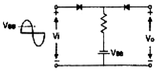
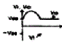
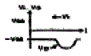
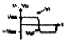
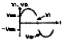
(정답률: 64%)
22. 직류 증폭기에서 온도 변화 등의 영향으로 인하여 출력이 변동되는 현상은?
- 팔진
- 초퍼
- 증폭
- 드리프트
(정답률: 70%)
23. 저주파 전력증폭이의 출력측 기본파 전압이 50[V]이고, 제2 및 제3고조파 전압이 각각 4[V]와 3[V]일 때 왜율은?
- 5[%]
- 10[%]
- 15[%]
- 20[%]
(정답률: 60%)
24. 다음 중 수정발진기의 특징에 대한 설명으로 적합하지 않은 것은?
- 수정진동지의 0가 매우 높다.
- 주파수의 안정도가 아주 좋다.
- 발진조건을 만족하는 리액턴스의 유도성이 되는 주파수 범위가 매우 넓다.
- 발진주파수를 가변하기가 어려운 단점이 있다.
(정답률: 37%)
25. 디지털 변조가 아닌 것은?
- PM
- ASK
- FSK
- QAM
(정답률: 72%)
26. 베이스 점지(C3) 증폭회로에 대한 설명으로 적합하지 않은 것은?
- 입력임피던스가 낮다.
- 전류이득은 1보다 훨씬 크다.
- 입력에 대한 출력은 통상이다.
- 높은 주파수를 다루는 음용분야에 주로 사용된다.
(정답률: 67%)
27. 다음 그림의 회로는 비안정 멀티바이브레이터(Astable multi vibarator)이다. 발진주파수에 대한 식으로 옳은 것은?
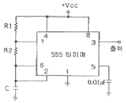
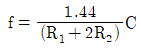
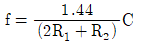
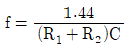
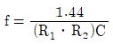
(정답률: 68%)
28. 진폭 변조(AN)에서 반송파 진폭이 20[V] 이다. 25[V]의 진폭을 가지는 신호파를 인가한 경우 변조도는?
- 0.65
- 0.8
- 1.0
- 1.25
(정답률: 63%)
29. 어떤 TR이 VDE= S[V]로 동작 된다. 이 TR의 최대 정격 전력이 250[nA]이라면 견딜 수 있는 최대 컬렉터 전류는 약 몇 [nA] 인가?
- 20[nA]
- 42[nA]
- 51[nA]
- 64[nA]
(정답률: 58%)
30. AM에서 1000[kHz]의 반송파가 35[kHz] 사인파에 의해 변조될 때 상측파대 주파수는?
- 1000[kHz]
- 1035[kHz]
- 1070[kHz]
- 1124[kHz]
(정답률: 69%)
31. 다음의 연산증폭기회로에서 출력 전압 VD는?
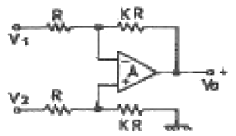
- VD=K(V2-V1)
- VD=KV2-(K-1)V1
- VD=(K+1)V2-KV1
- VD=(K+1)(V2-V1)
(정답률: 63%)
32. RC 결함 증폭기에서 주파수 대역폭을 1/4로 줄이면 증폭이득은 약 얼마나 증가하는가?
- 8[dB]
- 10[dB]
- 12[dB]
- 14[dB]
(정답률: 58%)
33. 다음 중 연산증폭기에 관한 설명으로 옳은 것은?
- 입력단자는 반전 입력(+)과 비반전 입력(-) 두 개가 있다.
- 이상적인 연산증폭기의 주파수 대역폭은 매우 좁아 주파수의 선택도가 매우 뛰어나다.
- 이상적인 연산증폭기의 출력임피던스는 무한대의 값을 갖기 때문에 버퍼회로에 이용된다.
- 연산증폭기는 선형 집적회로로 동작 전압이 낮고 신뢰도가 매우 높다.
(정답률: 49%)
34. 푸시풀(push-pull) 증폭기의 설명으로 옳은 것은?
- B급이나 AB급으로 동작시킨다.
- 두 입력의 위상은 동상이어야 한다.
- 공급 전압에 리플이 포함되어 있으면 부하에 나타난다.
- 트랜지스터의 비선형 독성에서 오는 일그러짐이 증가한다.
(정답률: 60%)
35. 무궤한 시 전압이득이 100인 증폭기에서 궤환률 0.09의 무궤환을 걸었을 때 전압이득은?
- 1
- 9
- 10
- 50
(정답률: 60%)
36. 다음 부궤환 회로의 특징 중 옳은 것은?
- 궤환시 이득이 감소한다.
- 주파수 대역폭이 좁아진다.
- 궤환시 왜율이 증가한다.
- 궤환시 잡음이 증가한다.
(정답률: 62%)
37. 다음 그림은 반전연상증폭회로이다. 일 때 V1=3[V], V2=4[V]일 때 VD는 몇 [V] 인가?
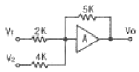
- -12.5
- -13.75
- -14.2
- -15.25
(정답률: 55%)
38. 다음의 접합형 FET 회로에서 드레인 전류 l0=4[nA] 일 때 드레인과 소스 전압 Vcs는 몇 [V] 인가?
- 1[V]
- 2[V]
- 3[V]
- 4[V]
(정답률: 41%)
39. 연산증폭기 응용회로에서 궤환을 사용하지 않는 것은?
- 반전 증폭기
- 비반전 증폭기
- 명전위 검출기
- 사이트 트리거
(정답률: 65%)
40. 다음과 같이 발진회로의 발진주파수는?
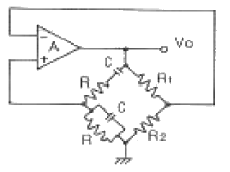
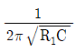
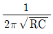
- 1/2πR1R2C
- 1/2πRC
(정답률: 50%)
3과목: 논리회로
41. BCD(B421) 코드는 몇 개의 2진 비트를 사용하는가?
- 6개 비트
- 5개 비트
- 4개 비트
- 3개 비트
(정답률: 73%)
42. 일반적으로 미사용 상태가 발생하더라도 문제없이 정상적인 카운트 루프로 복귀하는 카운터를 사용하는 것이 안전하다. 이와 같이 미사용 상태에서 정상의 카운트 루프로 복귀하지 않는 상태를 무엇이라 하는가?
- glitch
- lockout
- drop
- jitter
(정답률: 63%)
43. 10진수 5에 대한 3-초과 코드로 옳은 것은?
- 0101
- 1100
- 1000
- 1001
(정답률: 75%)
44. TTL IC에서 논리 0과 논리 1의 전압범위로 가장 옳은 것은?
- 논리 D = 0~1.5V, 논리 1 = 3.5-7V
- 논리 D = 0~1.0V, 논리 1 = 5~10V
- 논리 D = 0~0.8V, 논리 1 = 2-5V
- 논리 D = 5~10V, 논리 1 = 0~5V
(정답률: 62%)
45. 시간 폭이 매우 좁은 트리거 펄스 열이 입력단에 가해진 다면, 이 펄스가 나타나는 순간마다 출력 상태가 바뀌는 플립플롭은?
- JK 플립플롭
- T 플립플롭
- RS 플립플롭
- D 플립플롭
(정답률: 73%)
46. 불 함수
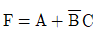
를 최소항의 합으로 바르게 표시한 것은?- F(A, B, C) = Σ(1, 4, 5, 6, 7)
- F(A, B, C) = Σ(1, 2, 3, 6, 7)
- F(A, B, C) = Σ(1, 3, 5, 6, 7)
- F(A, B, C) = Σ(1, 2, 4, 6, 7)
(정답률: 68%)
47. 다음 그림의 회로 명칭으로 옳은 것은?
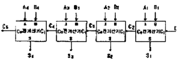
- 2비트 직렬가산기
- 2비트 병렬가산기
- 4비트 직렬가산기
- 4비트 병렬가산기
(정답률: 54%)
48.
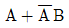
의 논리 방정식을 가장 간단히 표시한 것은?- A + B
- AB
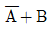
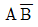
(정답률: 74%)
49. 2진코드 1111을 그레이(Gray) 코드로 변환하면?
- 1111
- 1000
- 0000
- 1001
(정답률: 66%)
50. 기억용량 단위인 4 니블(nibble)은 몇 바이트(byte)인가?
- 1
- 2
- 3
- 4
(정답률: 66%)
51. 다음 불 대수(Boolean Algebra) 중 옳지 않은 것은?
- A + A ㆍ B = A
- A ㆍ (A + B) = B
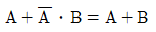
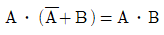
(정답률: 69%)
52. 다음 회로를 논리식으로 표현하면?
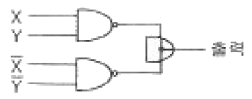
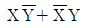
- X + Y
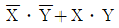
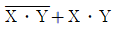
(정답률: 55%)
53. 드모르간(De Moragan)의 정리에 속하는 것은?
- A(A+B)=A
- AㆍB=BㆍA
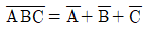
- A-(BㆍC)=(A+B)ㆍ(A+C)
(정답률: 68%)
54. 동기식 계수기의 특징과 가장 거리가 먼 것은?
- 회로가 복잡하다.
- 동작 속도가 저속이다.
- 시간지연(time delay)이 발생하지 않는다.
- 클록 펄스를 공동(병렬)으로 사용한다.
(정답률: 56%)
55. 다음 논리도의 기능은?
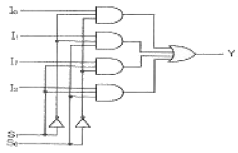
- 4-to-1 라인 멀티플렉서
- 4-to-1 디코더
- 4-to-1 크기 비교기
- 4-to-1 인코더
(정답률: 77%)
56. 다음 회로 동작을 설명한 것 중 옳은 것은?
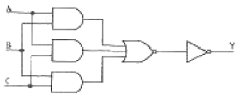
- 다수결 회로로 동작한다.
- Multiplexer 회로로 동작한다.
- Encoder 회로로 동작한다.
- A=1, B=1, C=0 일 경우 출력 Y=0 이 된다.
(정답률: 69%)
57. F = (ac)′ + ab′ 의 회로로 잘못 설계된 것은?
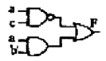
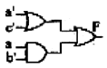
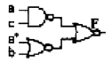
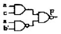
(정답률: 59%)
58. 동기식 모듈로-6 카운터(MOG-6)를 구성하는데 최소 몇 개의 플립플롭이 필요한가?
- 2
- 3
- 4
- 5
(정답률: 69%)
59. RS 플립플롭에 대한 설명으로 옳은 것은?
- 입력신호가 모두 0일 때는 이전상태의 반전
- 입력신호가 모두 0일 때는 이전상태의 유지
- 입력신호가 모두 1일 때는 이전상태의 반전
- 입력신호가 모두 1일 때는 Reset
(정답률: 65%)
60. JK 플립플롭에서 J=1, K=1 일 때, 출력(Q)의 값은?
- 0
- 1
- 불변
- 반전
(정답률: 63%)
4과목: 집적회로 설계이론
61. 미리 설계해 놓은 여러 소재들의 데이터(레이아웃데이터)를 모아 놓은 일종의 데이터베이스를 무엇이라고 하는가?
- 셀 라이브러리
- 패키지
- 서브 프로그램
- 고정 배선
(정답률: 81%)
62. MOS 구조의 전계효과 중 게이트 전압 Vs가 크게 증가하면 전계의 증가에 의해 산화층과 실리콘의 경계면에 소수 캐리어인 전자가 모이는 현상은?
- 공핍 모드(Depletion mode)
- 반전 모드(Inversion mode)
- 축적 모드(Accumulation mode)
- 바디 바이어스 효과(Body bias effect)
(정답률: 65%)
63. CMOS 제조 과정에서는 nMOS와 pMDS 트랜지스터를 만들 때 생기는 n 층과 p 층간의 결함(n-p-n-p 또는 p-n-p-n)에 의해 기성 트랜지스터가 구성되는데, 이 기생 트랜지스터가 결합되어 Vds와 Vss사이에 전류 통로가 형성되는 현상을 무엇이라고 하는가?
- 단락(Short)
- 래치업(Latch-up)
- 상호연결 기생요소
- ESD(Efectroslatic Dischange)
(정답률: 78%)
64. 다음 중 Integrated Cirouit(IC)에 포함시키기가 어려운 소자는?
- 트랜지스터(Transistor)
- 다이오드(Diode)
- 코일(Coil)
- 저항(Resistor)
(정답률: 79%)
65. CMOS 인버터(Inverter) DC 특성 곡선에서 최대 전류가 흐르는 NMOS와 PMOS의 동작 영역은?
- NMOS와 PMOS 모두 선형 영역
- NMOS는 포화 영역, PMOS는 선형 영역
- NMOS와 PMOS 모두 포화 영역
- NMOS는 선형 영역, PMOS는 포화 영역
(정답률: 62%)
66. 집적회로 구현을 위한 웨이퍼 제조 공정에 해당하지 않는 것은?
- 현상 공정
- 확산 공정
- 박막 공정
- 칩 테스팅 공정
(정답률: 83%)
67. 다음 모노리틱(Monolithic) IC의 제조과정 중 제일 마지막에 수행하는 공정은?
- 에피택셜(Epitaxial) 성장
- 산화막(Oxide) 생성
- 알루미늄 증착
- 불순물 확산
(정답률: 66%)
68. 전달게이트(transmission gate)에 대한 설명으로 틀린 것은?
- 스위치로 사용하기 위하여 NMOS와 PMOS를 병렬로 연결한 것이다.
- 두 개의 MOS 중 하나가 고장일 경우에도 동작을 한다.
- 실리콘 사용 면적이 감소하여 회로가 단순화 된다.
- ON 상태에서 NMOS와 PMOS가 모두 도통이 되므로 패스트랜지스터보다 ON 상태의 저항이 적다.
(정답률: 45%)
69. 다음 중 직접회로설계의 전반부(front-end) 설계에 해당하지 않는 것은?
- 레이아웃 설계(layout design)
- 논리회로 설계(logic design)
- 구조수준 설계(structural-level design)
- 행위수준 설계(behavloral-level design)
(정답률: 67%)
70. 시스템의 행동을 기술하기 위한 하드웨어 기술 언어에 속하는 것은?
- C-LANGUAGE
- VERILOG
- PASCAL
- COBOL
(정답률: 68%)
71. VLSI 레이아웃 설계 후 레이아웃 도면으로부터 추출한 저항 및 커패시턴스 값을 반영하여 논리 시뮬레이션을 다시 실시하는 과정을 일컫는 것은?
- floor planning
- back annotation
- logic synthesis
- self-alignment
(정답률: 74%)
72. 동적 CMOS 로직과 거의 같으나, 출력단에 인버팅래치가 달려있는 점이 다른 로직은?
- 도미노 로직
- 카미노 로직
- 슈도 로직
- 트랜스 로직
(정답률: 72%)
73. 다음 중 문턱전압(threshold voltage)에 대한 설명으로 옳은 것은?
- 전류가 포화상태일 때의 드레인 전압
- 채널이 사라지기 시작하는 게이트 전압
- 전류가 포화상태로 진압하는 게이트 저압
- 드레인 전류가 흐를 수 있도록 채널이 형성되는 시점의 게이트 전압
(정답률: 63%)
74. MOSFET에서 K×M/L는 무엇을 정의하는 식인가? (단, K:공정 전달 전도도, W:트랜지스터 채널폭, L:트랜지스터 길이)
- 소자 전달 전도도
- 캐리어 이동도
- 게이트 유전막
- 유효채널
(정답률: 68%)
75. 게이트 전압(V)이 기관 전압(V )보다 낮은 전위를 갖는 경우, MOS 구조의 동작 모드는?
- 반전 모드(Inversion Mode)
- 공정 모드(Depletion Mode)
- 증가 모드(Enhancement Mode)
- 축적 모드(Accumulation Mode)
(정답률: 68%)
76. 다음 중 직접회로 공정에서 불순물을 첨가하는 방법이 아닌 것은?
- 확산
- 이온 주입
- 성장
- 산화
(정답률: 63%)
77. 두 pMOS를 병렬 연결하여 반드시 한 게이트 입력에 “0”을 일력할 경우 형성되는 전도 패스의 기능을 볼 함수로 옳게 표현한 것은?
- aㆍb
- a+b
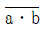
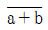
(정답률: 63%)
78. 게이트 어레이 방식 설계에 대한 설명으로 옳지 않은 것은?
- 웨이퍼를 절약할 수 있다.
- 칩 제조 공정의 시간이 절약된다.
- 회로 설계의 유연성이 증가한다.
- 표준 셀 방식보다 칩의 크기가 작다.
(정답률: 62%)
79. 실제로 클럭 신호는 MOS의 저항 및 용량 특성에 따라서 전달 과정에서 지연 효과를 갖게 되어 클럭의 시간차가 생긴다. 이와 같은 현상을 무엇이라고 하는가?
- 글리치(glitch)
- 해저드(hazard)
- 경합(race)
- 스큐(skew)
(정답률: 62%)
80. MOS 트랜지스터에서 게이트 출력이 ‘1“ 또는 ”0“레벨에 있을 경우 DC 전력을 거의 소모하지 않는 디바이스는?
- n-MOS
- p-MOS
- I-MOS
- CMOS
(정답률: 71%)